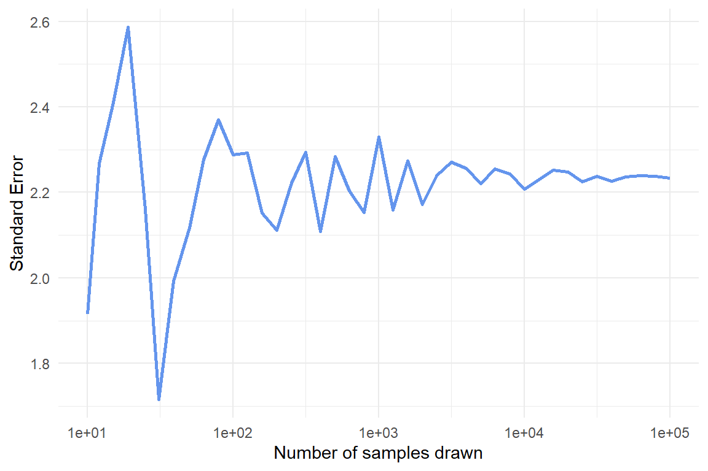

log10_seq <- as.integer(10 ^ (seq(1, 5, .1)))
log10_seq_names <- set_names(log10_seq)
map(log10_seq_names, \(i) {
map(1:i, \(x) tibble(values = rnorm(n = 20, mean = 20, sd = 10))) |>
list_rbind(names_to = "sample")
}) |>
list_rbind(names_to = "n_samples") |>
group_by(n_samples, sample) |>
summarise(m = mean(values)) |>
group_by(n_samples) |>
summarise(sterr = sd(m)) |>
mutate(n_samples = parse_number(n_samples))Session 10: Standard error, Bootstrapping and Confidence intervals
This week we will continue the statistics training by studying three important concepts; standard error (Video 1), bootstrapping (Video 2) and confidence intervals (Video 3).
Start by watching Video 1 (The standard error, Clearly Explained!!!).
In the video, Josh explains that the standard error is the standard deviation of sample means drawn from the same population. In other words, if we repeatedly take samples from a population, we can compute the standard error by calculating the standard deviation of those sample means. He illustrates this idea with an example starting at 2:44, in which samples of mouse weight measurements are taken (although this may not be the most well considered example, since the normal curve is centered at zero, implying that 50% of the mice would have negative weights). In the example, the sampling is repeated only three times, which hardly qualifies as “a bunch of times.” Your task is to replicate this analysis, but instead of taking three samples, take 10,000. Use the visuals and table in the example to determine the population parameters (speaking of well considered examples, would you say that the population normal curve in the video aligns with the characteristics of the drawn samples?). Calculate the standard error of the mean. If this exercise feels similar to something we did when learning about variance and standard deviation, you are on the right track.
When taking samples to calculate the standard error (and in other situations when working with simulations or random sampling), why is it important to do so “a bunch of times”, and how many times are enough?
Study the code in the code chunk below and explain each part (it may help to run the code one section at a time and inspect the output). What does the
set_names()function do and why is it important to use it in this case? Why do we include two (nested)map()functions?Run the code (it will take a minute or two) and continue the pipe to recreate the plot, as closely as possible, shown below the code chunk. Make sure the x-axis is formatted correctly. Be prepared to share your plot when we meet on Wednesday.
Copy and paste your final code, and add
set.seed(12345)at the very beginning before all other functions. Then rerun the code and compare the output to your previous results and the plot shown below. Explain what theset.seed()function does and why it is a helpful tool when working with simulations or random sampling.Is the pattern (in terms of convergence as
n_samplesincreases) affected by the sample size of each individual sample (the number thenargument is set to inrnorm())?
Warning: package 'tidyverse' was built under R version 4.4.3Warning: package 'ggplot2' was built under R version 4.4.3Warning: package 'purrr' was built under R version 4.4.3
- Using similar logic as in the two previous exercises, create a simple simulation study in which you investigate the relationship between the standard error of the mean and sample size, while keeping the population mean and standard deviation constant. Vary the sample size across a reasonable range and compute the standard error for each case. Visualize your results and explain what you observe. Hint: First, create a vector of sample sizes that you want to investigate. Then, use nested
map()calls as in Exercise 2. In this case, set1:10000as the first argument in the innermap()function and usen = iinrnorm().
Now watch Video 2 (Bootstrapping Main Ideas!!!)
- We will now use our R skills to calculate the standard error in three different ways; via simulation, bootstrapping and formula. To practice this we will use data from the
palmerpenguinspackage, data you are already familiar with. Once the package is loaded you will be able to work with the data by referencing the objectpenguins.
We will focus on the Adelie species of penguins and calculate the standard error of the mean bill length (
bill_length_mm). But first, make a histogram showing the distribution of bill lengths for this species.By now you should a have a pretty good idea how you could go about calculating the standard error of the mean using simulation, in other words by sampling repeatedly from a normally distributed population with parameters estimated from the sample of Adelie penguins (Hint: you should be able to reuse some code from exercise 1). Think about how to best handle missing values in this case and in general when calculating the standard error.
Next, we turn to bootstrapping. Since we have not yet covered bootstrapping in R, we provide some code below. Fill in the blanks. Study the code carefully and make sure you understand each part. Then complete the analysis by calculating the standard error using the bootstrap samples in
Adelie_boot. What does the distribution of the bootstrap means look like?
boot <- function(data){
data |>
slice_sample(prop = 1, replace = _____)
}
Adelie_no_missing <- penguins |>
filter(species == _____,
!is.na(_____))
Adelie_boot <- map(1:10000, \(i) boot(_____)) |>
list_rbind(names_to = "iteration")Josh briefly mentioned in Video 1 that in rare cases there is a formula that can be used to estimate the standard error. There is such a formula for the standard error of the mean and it is simply the standard deviation divided by the square root of the sample size. Use this formula to calculate the standard error of the mean for Adelie penguin bill length.
How do the standard errors or the mean from the three different calculations compare?
- Calculate the correlation between bill length and body mass in Adelie penguins (hint: use
summarize()andcor()).
- Pick one of the methods from exercise 4 to calculate the standard error of the correlation. Explain why you picked the method you did.
We are ready to start thinking about confidence intervals. Check out Video 3 (Confidence Intervals, Clearly Explained!!!)
Josh explains that a 95% confidence interval is just an interval that covers 95% of the (bootstrap) means, or whatever statistic we decide to focus on.
- Use bootstrapping to calculate the 95% confidence interval of the mean bill length in Adelie penguins. To find the interval that covers 95% of the bootstrap means, use the
summarize()andquantile()functions.
Do the same thing as above for the other two species of penguins in the
penguinsdata. Plot the mean and 95% confidence intervals for the three species side by side in the same plot. Usegeom_pointrange()for this. Do the penguin species differ significantly with regards to mean bill length?Repeat the confidence interval generating process, but this time instead of focusing on the mean bill length, investigate the correlation between bill length and body mass. Are the correlations statistically different from zero? Are they significantly different from 0.5? What conclusions do you draw when comparing the different species?
Which species has the widest confidence intervals (look at both mean and correlation)? Think about why this is the case.
- We have defined 95% confidence intervals as an interval that contains 95% of the means calculated when bootstrapping the sample. While this is correct and provides an intuitive way to think about confidence intervals, the formal definition is somewhat different (and more general). We do not want you to get bogged down in the minutiae of definitions here, but it might be useful to look at a visualization that illustrates the more general way of defining confidence intervals. Check out the visualization found here: https://rpsychologist.com/d3/ci/. Can you infer the definition of confidence intervals from this visualization?